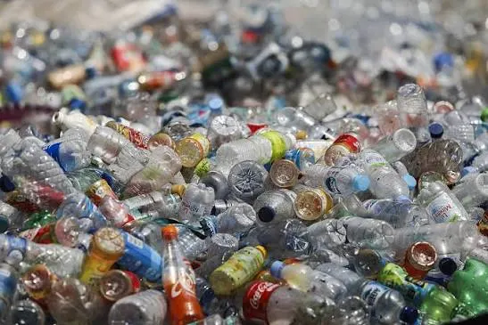

By Munira Ahmed · PRC Pakistan · 3 min read
Plastic Pollution

پلاسٹک کا استعمال دنیا بھر میں بڑھتا جارہا ہے۔ بوتلیں، کپ، پلیٹیں اور ڈبے جو کبھی دھات کے ہوتے تھے اب پلاسٹک کی صورت میں ملتے ہیں جو اپنے رنگ اور کم قیمت کی وجہ سے ہر طرف عام ہوگئے ہیں۔انکا استعمال بھی آسان اور انکو پھینکنا بھی آسان۔ ہمارے سمندر ، دریا اور خالی جگہیں پلاسٹک سے اٹی ہوئ ہیں۔ پلاسٹک چونکہ وقت کے ساتھ گلتا سڑتا نہیں ہے اسلئے کروڑوں ٹنوں کے حساب سے دنیا بھر کے کوڑا دانوں، سمندروں اور دریاؤں میں تہ در تہ جمع ہورہا ہے۔ اس سے ماحولیات اور حیاتیات دونوں متاثر ہورہے ہیں۔ پرندوں اور جانوروں کے پیٹوں میں پلاسٹک جمع ہوجاتا ہے جو بالآخر انکی موت کا سبب بنتا ہے۔
کبھی کسی پرندے کی چونچ ربڑ بینڈ سے بند ہوجاتی ہے تو کبھی پلاسٹک کسی جانور کے گلے میں پھنس جاتا ہے اور انکی ہلاکت کا سبب بنتا ہے۔
کیا آپ ماحولیات اور حیاتیات کی بقا جو دراصل نسل انسانی کی بقا کے ذمہ دار ہیں انکے لئے پلاسٹک کا استعمال کم کرسکتے ہیں؟
اور ہم کس طرح ماحول کو پلاسٹک کی آلودگی سے بچا سکتے ہیں؟